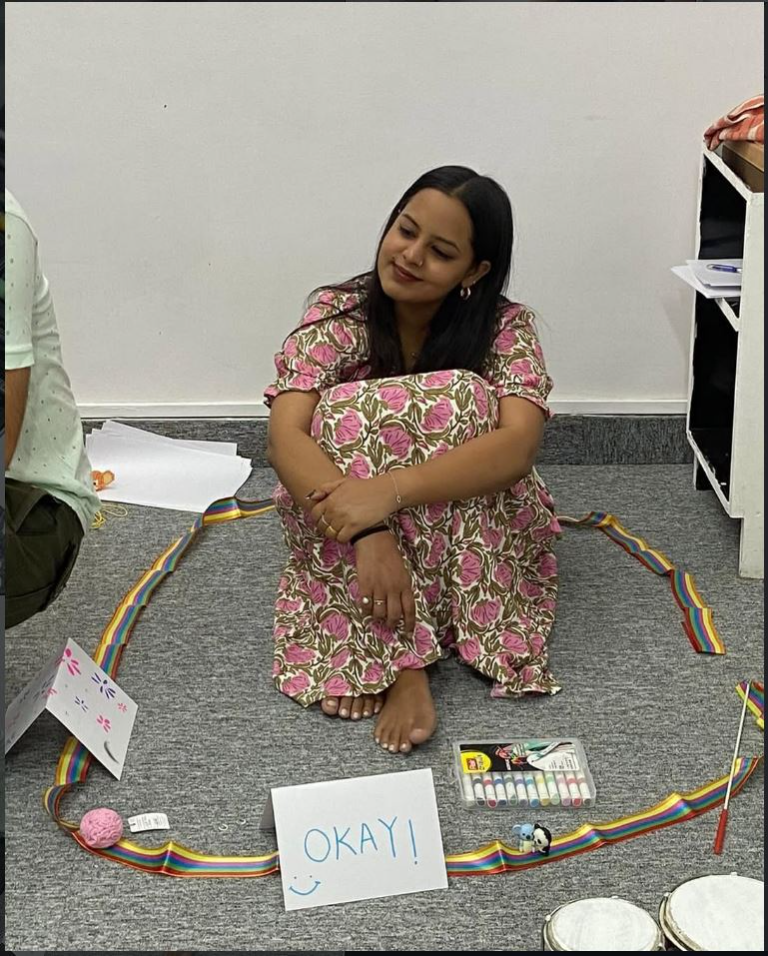
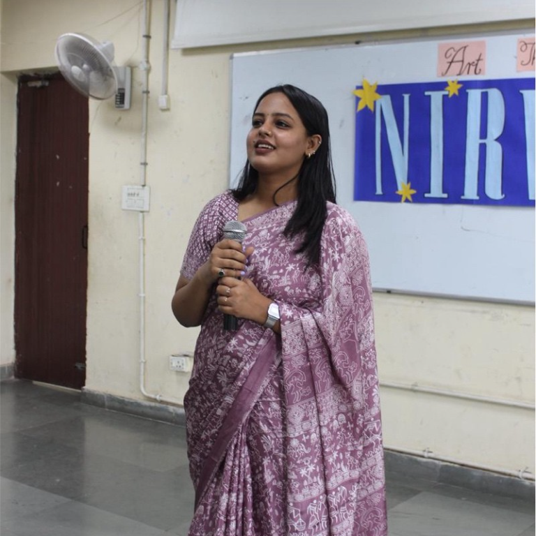

Psychological support
A welcoming space to talk, reflect, and explore what’s on your mind with a counselling psychologist.
Care that starts with conversationCounselling psychologist · Expressive arts therapist
A supportive space to explore your inner world through conversation and creativity, at a pace that feels right for you.

You don’t need the perfect words to begin.
Curiosity is more than enough.
Anshika Rana
Soul and Scribble is a psychological support and creative healing space led by Anshika Rana, Counselling Psychologist and Expressive Arts Therapist.
Through conversation and creativity, there is room to pause, explore what’s within, and find your own ways to express and rediscover yourself.
Conversation and creative expression offer different ways to pause, process, and explore what matters to you.
A welcoming space to talk, reflect, and explore what’s on your mind with a counselling psychologist.
Care that starts with conversationMake space for creativity as another way to explore, express, and give shape to what words may not capture.
Creativity as part of the processA space to slow down, reconnect with yourself, and discover new ways of seeing your own story.
Pause · Process · Heal
A little more about my work
As a counselling psychologist and expressive arts therapist, Anshika brings together psychological support and creative exploration. Soul and Scribble is a space to pause, process, and heal through conversation and creativity.
Follow along or learn more about Anshika’s professional background on her social profiles.
There is more than one way to listen to yourself. Sometimes, it begins with a little room to create.
A creative healing spaceMake a little room to slow down, notice, and arrive just as you are.
Explore your thoughts and feelings through conversation and creative expression.
Rediscover yourself and make space for new perspectives to take shape.
It’s okay to want to know a little more before reaching out. If your question isn’t answered here, you’re welcome to ask Anshika directly.
Ask a questionIt brings creative expression into a supportive process of exploration. Creativity can offer another way to reflect alongside conversation.
No artistic skill or finished artwork is the point. The focus is on making space to explore and express, not on making something perfect.
You don’t need to have everything figured out. You can reach out with a question and share only what feels comfortable.
Send an email, call, or connect through Instagram or LinkedIn. The contact section has all the details.
Have a question or want to learn more? Reach Anshika by email or phone, or connect on Instagram and LinkedIn. You’re welcome to share only what feels comfortable.
A note to Anshika
Pause. Process. Heal.
Find your space to explore